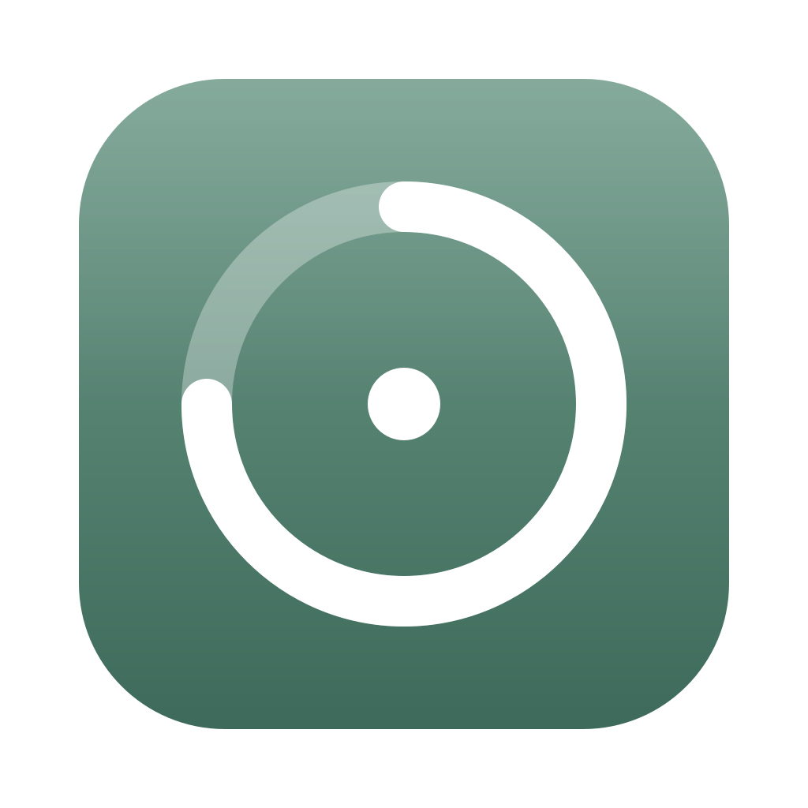
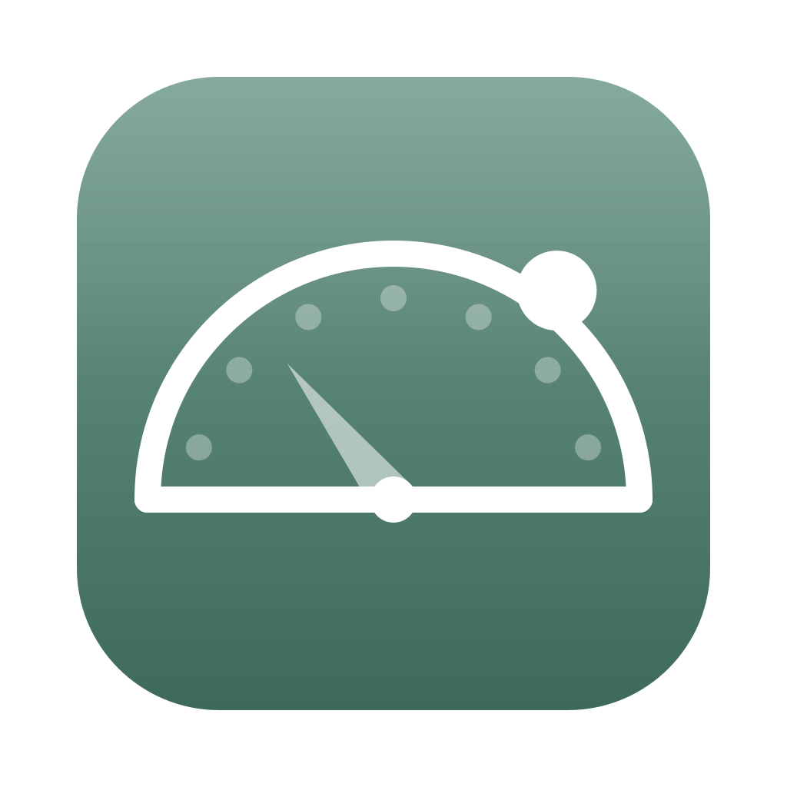
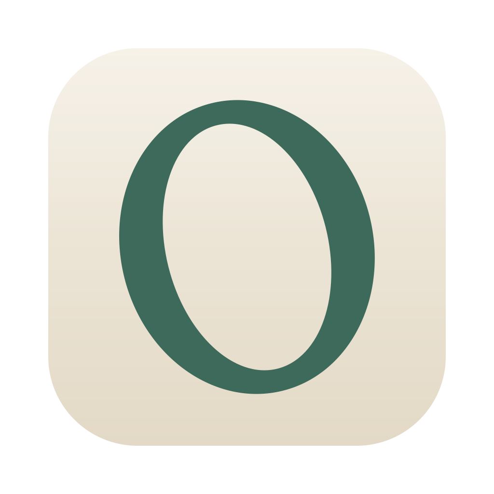
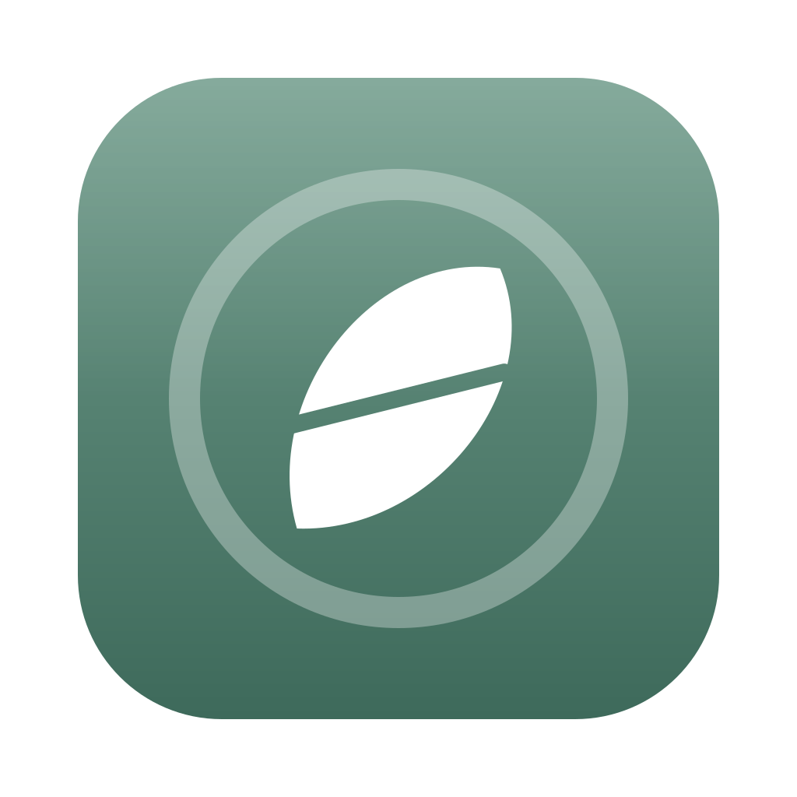
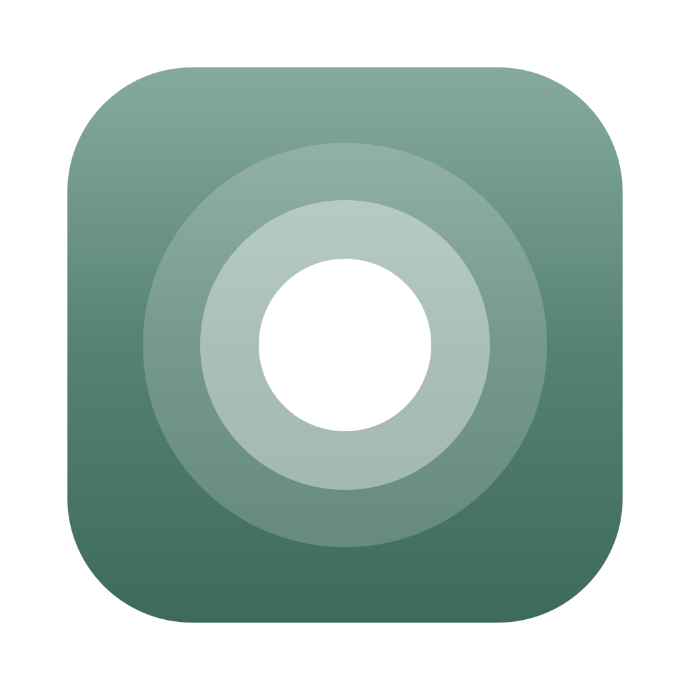
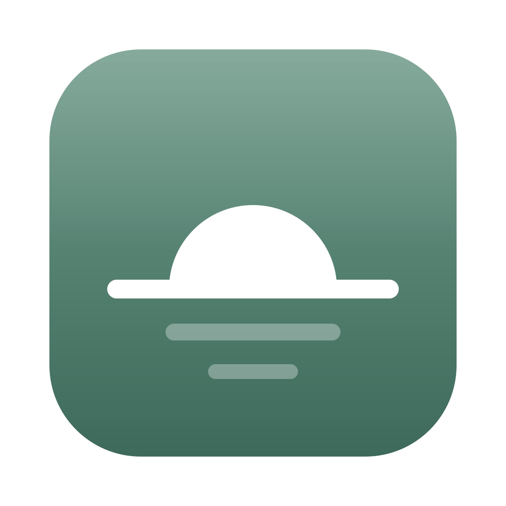

1Orbit
A progress ring, the same visual language as the Glance view. Says 'timer' and 'calm' at once, and stays crisp at 16px.
9:41
9:41
Each concept at real sizes (128 → 16px), as a one-colour menu bar icon (light and dark), and in a Dock-style tile.

A progress ring, the same visual language as the Glance view. Says 'timer' and 'calm' at once, and stays crisp at 16px.

A Roman sundial: the shadow moves, the day passes. Ties the Latin name to timed breaks; the most story-rich option, a little detailed at 16px.

A carved Roman-inscription 'O' for Otium on warm travertine. Distinctive and brand-led rather than literal.

Wellness inside a ring: rest and nature within a cycle. Friendly, but closer to generic health apps.

Concentric circles like a slow breath or a ripple. The quietest option; reads well as a tiny dot in the menu bar.

The sun at the horizon: 'time to step away'. Warm and narrative; the reflection lines soften it.